| No | 기능 | 요청사항 (현업 원문 요약) | 구현 내용 | 상태 | 비고 |
|---|---|---|---|---|---|
| 1단계 · 기록 신뢰성 | |||||
| 1 | 헤더 필드 | 헤더에 실험 날짜, Platform tech / Pre-NPC 선택(MAPIS NPC 번호가 없는 과제), 연관 NPI 번호(여러 개), 종이 노트·페이지 참조Nice | Basic Data에 Experiment Date, Platform / Pre-NPC, Paper Notebook Ref. 추가. NPI 번호는 Associated Project # (NPI, NPT, TS) 칩으로 통합(Primary 1개 지정) | 구현 완료 | NPI 별도 칸은 설계 리뷰(4개 모델) 후 운영 라벨 Associated Project # (NPI, NPT, TS)로 통합(MAPIS에선 NPI 번호 = 프로젝트 코드). Tech Support까지 프로젝트 모듈 전 범위. Platform/Pre-NPC는 프로젝트와 공존 가능. 운영에 Platform·Pre-NPC 마스터 목록이 없어 유형(Platform Technology / Pre-NPC)만 고르고 이름은 입력, 다른 노트에서 쓴 이름은 자동완성으로 추천(사용자 결정). Stage는 Primary 유형별 체계, Task는 프로젝트별 일정에서. 종이 노트 참조는 Nice였으나 구현 부담이 작아 포함. |
| 2 | Co-Signer 서명 | 작성자가 Co-Signer(서명자)를 직접 선택 | 작성자가 서명자 지정 → 섹션별/전체 제출 → 서명자가 Approved / Not Approved(코멘트 필수). 헤더 상태와 배지로 진행 표시 | 구현 완료 | 카드 이름은 "Sign-off"로 바꾸지 않고 기존 "Approval" 유지(사용자 혼동 방지). 서명 행 형식은 운영 결재 UI와 동일. |
| 3 | 제출 후 잠금 · Errata | ELN 제출 후에도 섹션 추가와 Errata(정정) 가능 | 제출 섹션은 편집·삭제 모두 차단, 반려 시 해제, 전체 승인 시 노트 전체 읽기 전용. 승인 후에도 Errata(사유 필수) 추가 가능 | 구현 완료 | 리뷰에서 키보드·드래그·이미지 드롭으로 잠금을 우회하는 경로가 발견돼 보강. Errata는 승인 후에도 허용(원문 불변, 정정만 추가). |
| 4 | Audit Trail | Audit Trail 기능 | 시각·사용자·섹션·동작·변경 전→후 표와 Section/User 필터. 헤더부터 에디터·표·첨부·결재까지 대부분의 변경을 기록 | 구현 완료 | 섹션 내부 변경(표·첨부·에디터 등)까지 기록하도록 범위 확장(사용자 요청). 노트 전환·복제 같은 프로그램 일괄 변경은 기록 제외. |
| 2단계 · 협업 · 검색 | |||||
| 5 | 공동 편집자 | 공동 편집자 추가, 공동 편집 노트에서 수정한 사람 이름 표시, 편집자별 변경 추적 | 헤더 Share · N 버튼의 Share & Access 창에서 Co-editor 추가(공유와 한 곳에서 관리). 섹션별 Last edited by 표시, 변경은 Audit Trail로 추적. 승인된 노트에는 Co-editor 추가 불가 | 구현 완료 | 동시 편집은 다루지 않음 — 원문에 동시 편집 요구가 없고, Co-editor는 번갈아 편집하는 개념. 섹션 잠금은 섹션별 저장을 전제해 노트 단위 저장과 맞지 않아 제외(사용자 결정). 공동편집자와 서명자는 다른 사람으로 구성. 헤더 아바타 대신 Share 버튼 하나(개인정보 사유로 사진·아바타 미사용). |
| 6 | 공유 | 규정 준수 하에 노트·섹션을 다른 사용자와 공유 (예: R&D ↔ Process Technology 스케일업 협업) | Share & Access 창(공동 편집자와 같은 창). 목록 화면에서 접근 인원(Function·Scope) 확인·Edit·Remove, Add People로 대상·Function(Co-editor/Viewer)·범위·사유·정보보호 확인 입력. Viewer만 섹션 단위 공유 가능. 사유와 정보보호 확인은 Audit Trail에 함께 기록 | 구현 완료 | 공동 편집자와 공유를 한 모달로 통합 — 공유 권한 Edit과 Co-editor가 같은 개념이라 하나로 정리(사용자 결정). Function은 Co-editor/Viewer 두 단계(코멘트 기능이 없어 Commenter 제외). 정보보호 확인 체크는 원문 "under compliance"의 해석(운영에 없는 요소) — 감사 근거가 남도록 Audit 기록에 포함(사용자 결정). Co-editor는 항상 전체 노트, 섹션 공유는 Viewer만(원문 "sections" 공유 = 보여 주는 범위). 승인된 노트도 Viewer 공유 허용. 공유는 프로젝트 연결과 무관. |
| 7 | 노트 복제 | 기존 실험을 복제해서 시작 (Copy from) | 왼쪽 버튼 영역(Save Template 위)의 Copy To 버튼 › 복사할 섹션 + Include entered data 선택 › Copy 하면 새 창에 저장 전 복사본 생성(새 번호). 원래 창은 그대로. 리스트 요약 패널에서도 Copy To(데이터 포함 여부만 선택, 전체 섹션 복사) › 새 창에 저장 전 복사본, 저장 후 리스트에 표시 | 구현 완료 | 운영 FMEA 'Copy To'와 같은 이름·위치·흐름(새 창, 저장 전). 'Clone' 대신 'Copy'로 용어 통일. Sections to Copy는 섹션 구성, Include entered data는 값 — Basic Data는 필수 섹션이라 항상 포함(체크 고정). 연결 프로젝트는 데이터 선택과 무관하게 복사(노트 메타데이터). 승인된 노트를 복사해도 새 노트는 편집 가능. |
| 8 | 노트 상호참조 | 같은·다른 작성자의 ELN 실험을 상호참조로 삽입, 관련 실험 링크 추가 | 에디터에서 @ 입력 시 노트 자동완성, 칩 링크, 마우스 오버 요약 카드, 클릭 시 새 팝업. Related Items에 자동 추가 | 구현 완료 | Summernote 기본 기능(hint)으로 실제 구현 가능 확인. 칩 클릭 시 새 창(작성 중 노트 유지). Related Items의 참조 항목은 에디터가 원본이라 직접 삭제 불가, 에디터에서 지우면 함께 제거. |
| 9 | 검색 확장 | 작성자·프로젝트명·NPI 번호 등으로 검색, 첨부파일(Office·텍스트 형식) 내용까지 검색Nice | 저자, Project # / NPI, 첨부 본문 검색(일치 문장 강조) 구현 구조식 검색검토 중 화면에 Under review로만 표시(화학 검색 엔진 필요) | 구현 완료 | "NPI 번호 검색"은 프로젝트 코드·이름 검색으로 통일(Primary·Associated 모두). 구조식 검색은 화학 검색 엔진이 필요해 검토 중. |
| 10 | 권한 없는 노트 검색 | 읽기 권한이 없는 ELN도 검색 (허용되면 기본 정보만 표시) | 검색 결과에 자물쇠 행(번호·제목·저자·날짜)만 표시, 클릭 시 접근 불가 요약과 Request Access(사유 필수) | 구현 완료 | 프로젝트 등 기본 정보로는 검색되되 본문·태그·첨부는 비노출(원문 "show just the basic data if allowed"). |
| 3단계 · 콘텐츠 | |||||
| 11 | 첨부 미리보기 | Office·PDF·이미지 연동, 첨부하면 내용 미리보기, 첨부 용량 증가, 동영상 업로드Nice | Word·Excel·PPT·PDF·이미지·동영상 노트 내 미리보기, 재업로드 시 새 버전 | 예정 | Office OLE 임베드·더블클릭 편집은 웹에서 불가 → 미리보기 + 새 버전 업로드로 대체. 파일서버 저장 유지. |
| 12 | SharePoint 작업 문서 검토 중 | SharePoint·Teams 문서를 ELN에서 보고 편집, 최신본 자동 반영Nice | SharePoint 문서 링크 연결, 웹·데스크톱 Office 편집. 법적 기록에는 미포함 | 예정 | 작업용 문서로 법적 기록에서 제외하는 원칙. 법무·QA, IT(화면 표시) 확인 필요. |
| 13 | ChemStudio 연동 | Biovia·ChemDraw 반응식 연동(분자량·배치 번호 표시), 내장 구조 편집기Nice | ChemStudio로 구조식·반응식을 그리고 분자량 등을 노트에 표시 | 예정 | ChemDraw·Biovia는 자체 ChemStudio로 대체(Ketcher 계열 편집기 내장). |
| 14 | PDF 내보내기 | ELN을 PDF로 다운로드 (법무 확인 필요)Nice | 노트를 PDF 파일로 저장 (법무 확인 후 확정) | 예정 | 법무 확인 후 확정. |
| 15 | 번역 | 현지 언어 입력·번역 기능 | 노트 텍스트를 다른 언어로 번역해서 보기 (보기 전용) | 예정 | 보기 전용(원문 불변). 번역 서비스는 사내 승인 서비스로 결정 필요. |
상태: 구현 완료 = 시연 가능 / 예정 = 다음 단계에서 구현. Nice = Nice-to-have(있으면 좋은 요청). 기존 기능(템플릿, 태그, 관련 항목 링크, Excel 붙여넣기 → 표·차트)은 그대로 유지.
| 요구사항 | 사유 |
|---|---|
| Excel · Word 객체 임베드 · 더블클릭 편집 | 웹 브라우저에서 기술적으로 불가 (11번 첨부 미리보기, 12번 SharePoint 작업 문서로 대신함) |
| ChemDraw · Biovia 연동 | 13번 ChemStudio 연동으로 대체 |
| 짧은 ELN 번호 | 현행 MAPIS 번호 체계(NT-2605-00142) 유지 |
| 스캔 노트 격자선 제거 · 필기 인식 | 효과에 비해 비용이 큼 |
| 역할 · 권한 사용자 정의 | 관리자 화면 영역으로 이번 범위 밖 |
| NPI 번호 별도 입력칸 | Associated Project # (NPI, NPT, TS) 칸으로 통합(중복) |
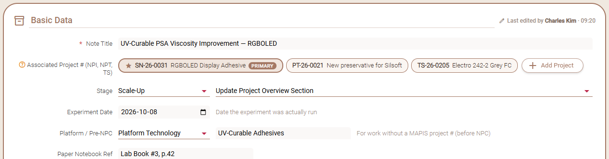
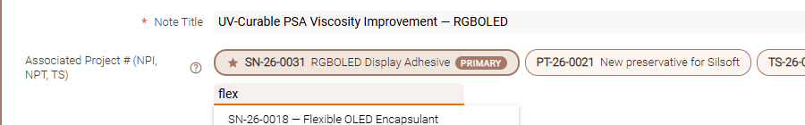
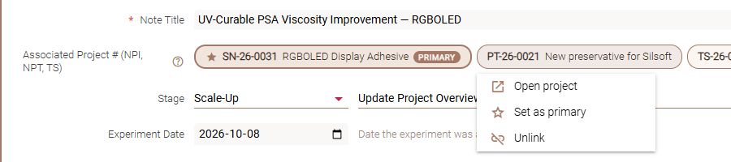
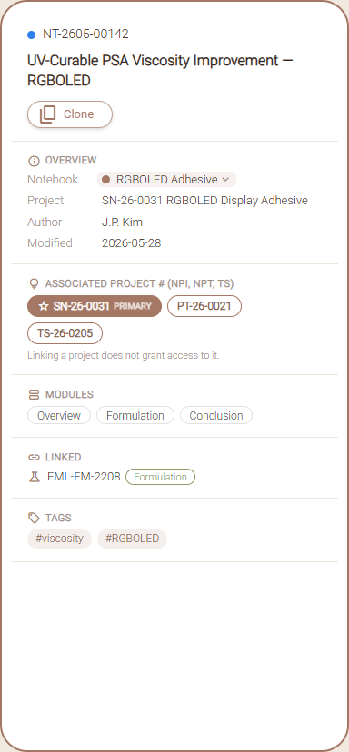
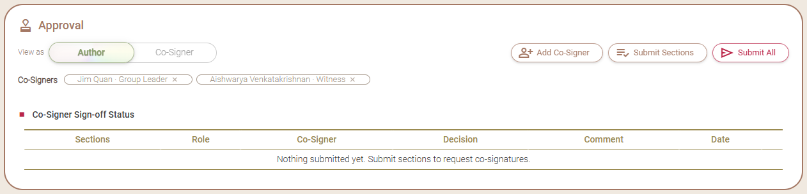
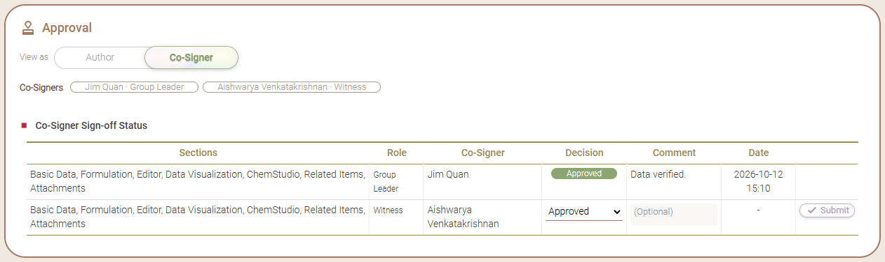
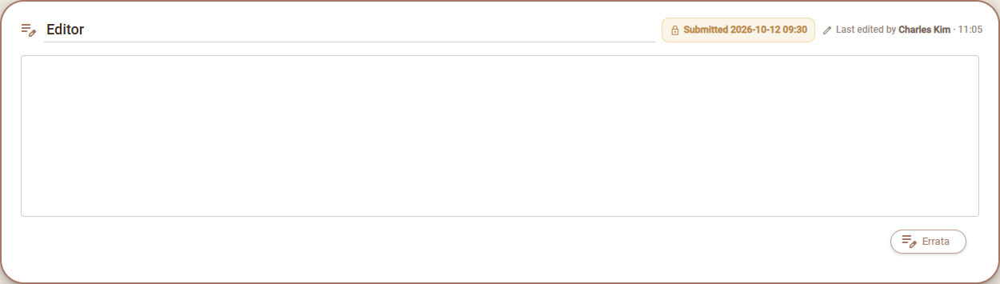
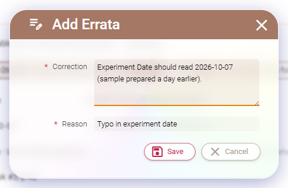
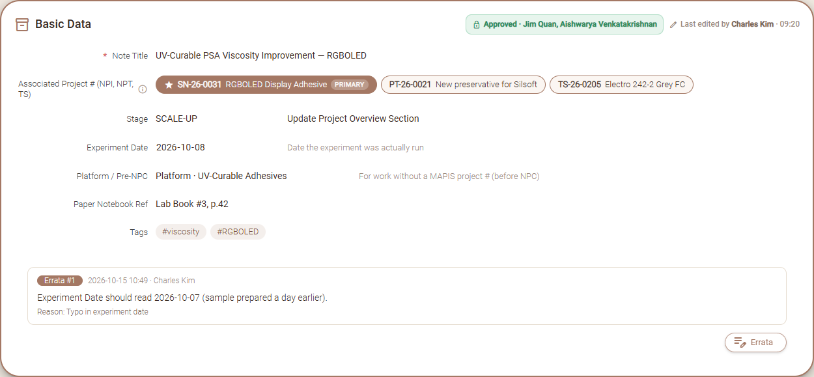
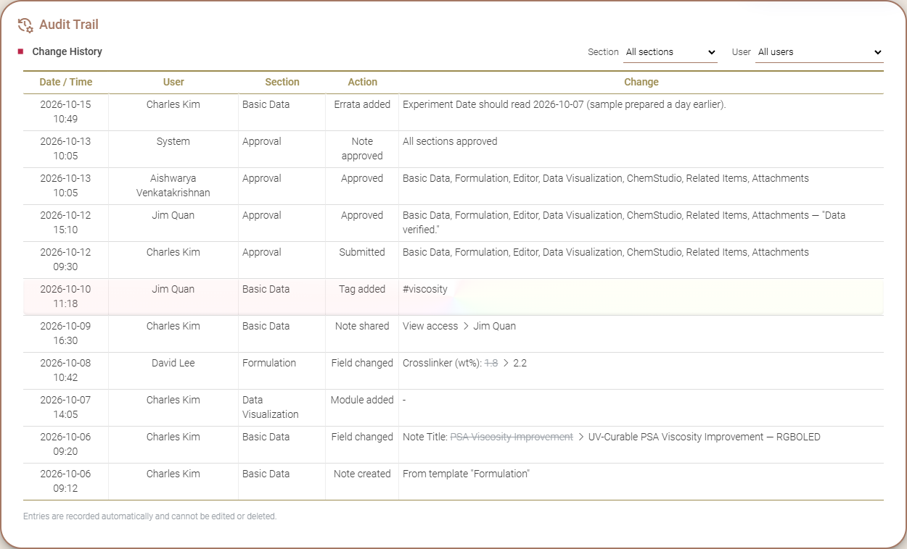
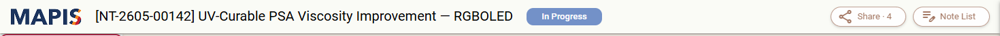
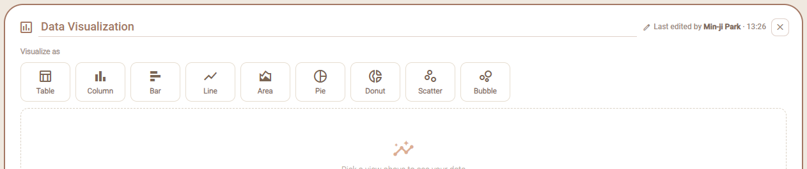
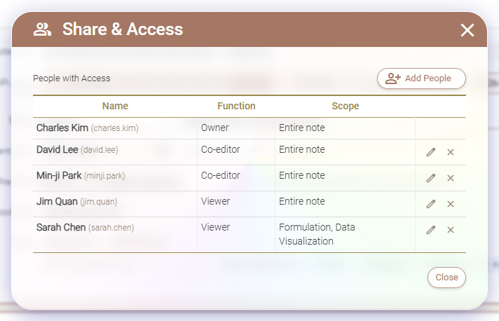
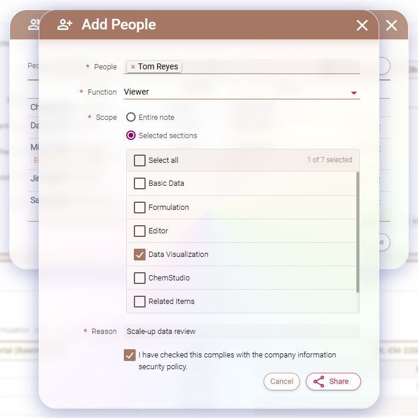
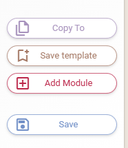
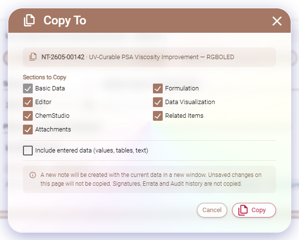
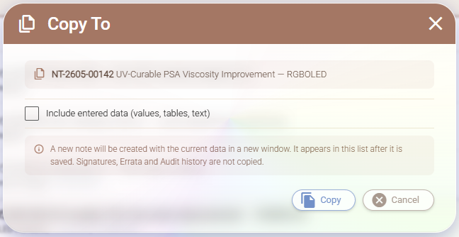
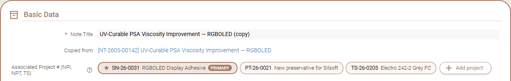
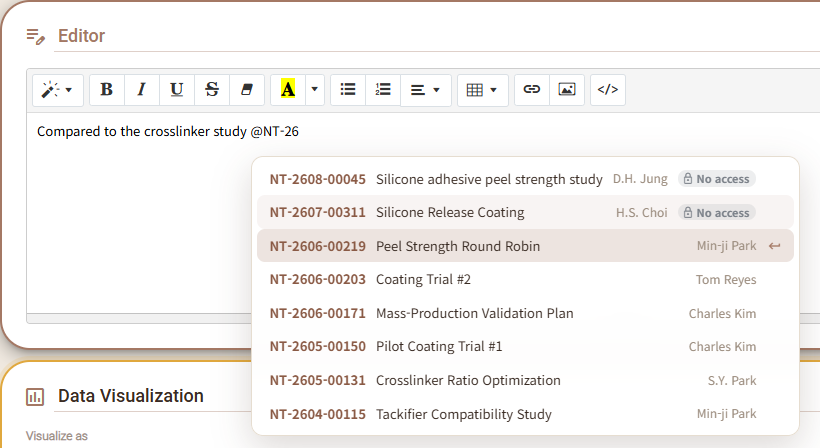
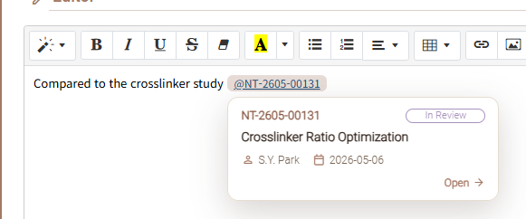
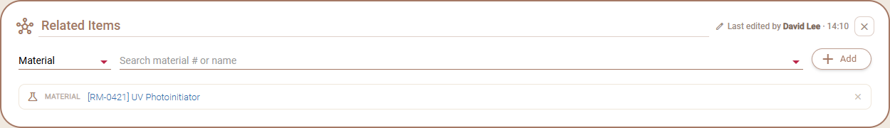
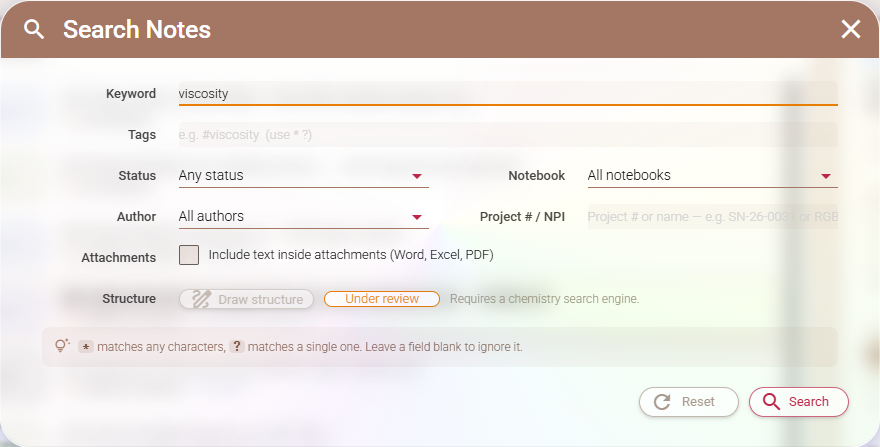
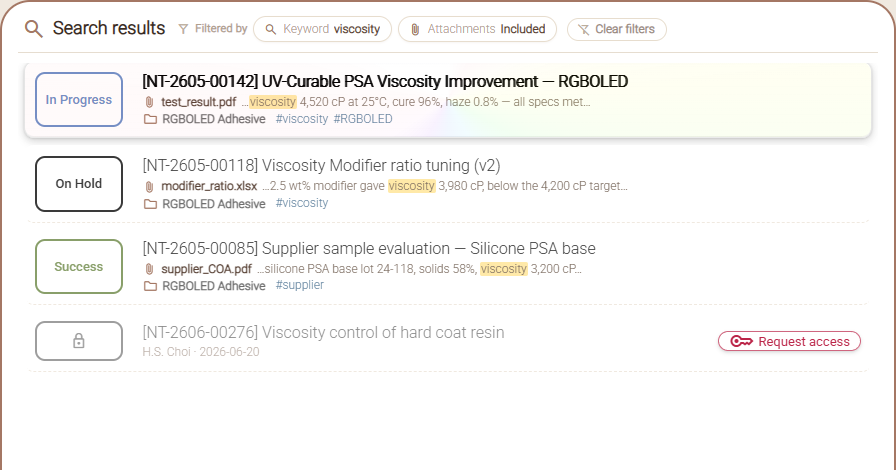
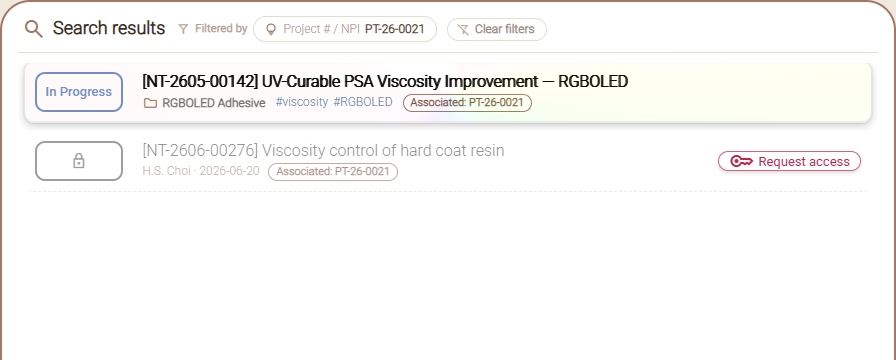
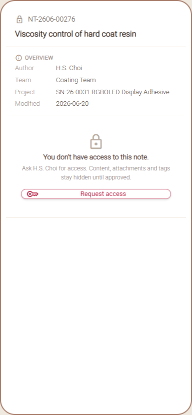